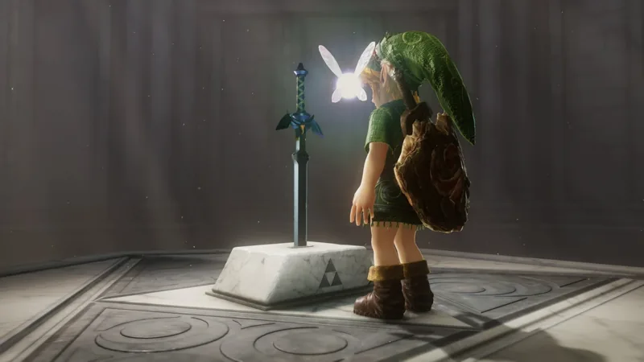
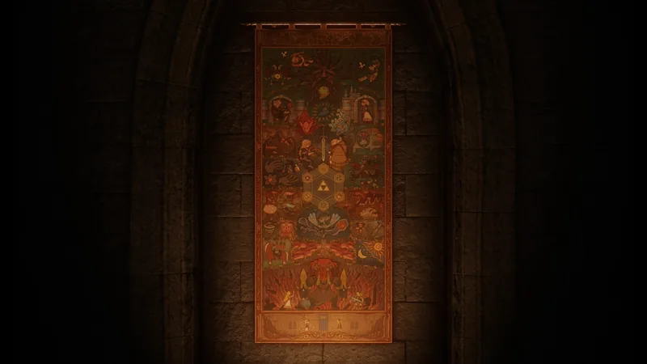

Ocarina of Time on Switch 2: A Review and Returning Player’s Guide
If you played the N64 original, you can walk this remake from memory and be right about nine times out of ten. This page is about the tenth time: a review of what the remake adds and leaves out, then a guide to what moved, what’s new, what the economy does differently, and the handful of gates that will stall a veteran who assumes nothing changed. Everything here comes from one full playthrough, launch day to credits, with a log kept along the way.
I’ve been through Ocarina of Time three times before this: the N64 game when it was new, the 3DS version, and the N64 game again a few years ago. A Link to the Past is still my favorite Zelda and the one I actually know by heart — I’ve finished it somewhere around fifty times. Ocarina I know well enough to find my way without a map, which made the remake a chance to answer a specific question: how much is actually different? The answer is that the skeleton is untouched — same dungeons, same bosses, same medallion order, same six Sheik songs at the same six spots — and the changes are a layer of small, deliberate revisions aimed at people who already know where everything is. Not a lot new, but the game didn’t need a lot.
A note on how I played: thorough but not completionist. Every heart piece, every bottle, every Great Fairy, Biggoron’s Sword and the full arrow set, with the Gold Skulltula hunt stopped once the useful rewards were in hand. That’s the route the guide half of this page assumes.
The review
The honest headline is that there isn’t much new, and that’s fine, because the game was very good to begin with. Nintendo rebuilt it from the ground up for the Switch 2 — new visuals, fully voiced cutscenes, an orchestral score, a jump button and free running, a camera on the right stick — and then left the design alone. Every dungeon is the dungeon you remember. Every boss falls to the trick it always fell to. The remake’s own ideas are small: a gem that finds Skulltulas for you, wind that marks the scarecrow spots, sprouts that mark the storm grottos, two notes in a field that send you back in time for a pair of heart pieces, a seed that summons a shopkeeper. Each is a quality-of-life fix for a thing the 1998 game made you guess at. None of them changes what the game is.
What it loses is challenge. The minigames are easier, the bosses are softer, the fees are lower and the castle no longer gives you three minutes to get out. There’s no Master Quest and no hard mode, which the 3DS version had and which a remake aimed squarely at returning players should have. Veterans will not be tested. The Water Temple is still a chore, which is almost reassuring.
Where does it land? On The Orlandu 50, A Link to the Past is number one and the N64 Ocarina of Time is twentieth — it sits there because the 2D Zeldas got there first, and nothing about the remake changes that argument. The 3DS version was ranked on its own and didn’t make the fifty. This one would. It’s the best way to play Ocarina of Time now, it’s the same game at heart, and I enjoyed every day of it. It just isn’t a new one.
The guide: what you can trust from memory
More than you’d think. Nearly every heart piece is where it was: the roof man in Kakariko, Dampé’s dig, the Lon Lon silo, both Skull Kids in the Lost Woods, the Zora’s Domain torch run, the Gerudo Valley waterfall ledge, the windmill, the Graveyard bean ride, the dive to the bottom of the Lakeside Lab pool. Every dungeon item is in its dungeon. The Biggoron trade chain still runs through Grog, Granny, the carpenters, King Zora and the lab. Darunia’s son still hands you the Goron Tunic for free, and King Zora still gives up the Zora Tunic for thawing him out. Dampé’s race still pays the Hookshot, the Ice Cavern still pays the Iron Boots, and the Bottom of the Well still pays the Lens of Truth. Pull the Master Sword and Sheik gives the same speech about five temples, starting in the forest.
New systems worth knowing before you start
- The Echo Gem replaces the Stone of Agony — From the House of Skulltula. It rumbles the controller and blinks an amulet near Gold Skulltulas, and it fires in daylight even for night-only spawns, so an empty buzz means come back after dark, roll into a tree, or bomb a wall.
- Scarecrow spots are marked — A swirl of wind sits anywhere Pierre will appear once you’ve re-taught Bonooru the song as an adult. The Zora’s Fountain swirl leads to a Purple Rupee, not a heart piece.
- Song of Storms grottos are marked too — Little green propeller sprouts in dirt rings around Hyrule. Play the song beside one and a hole opens. The original hid these with no indicator at all; nothing on the route below is in them.
- Fairy Notes — Two notes in Hyrule Field can only be read as adult Link, and they unlock two child-era heart pieces: a locked chest under an outcropping on the approach to Gerudo Valley, and a Business Scrub in a grotto on the castle side of the moat who won’t sell until you know his password (“Sell somethin’, will ya?”). Read both as an adult, make one trip back as a kid, collect both. The chest is empty if you open it as an adult.
- Business Scrub Seeds — A new single-use item that summons a merchant selling a Red Potion, three hearts, ten Deku Seeds, or a bug. They turn up in hidden rooms all through the game, not in shops: the first was in Dodongo’s Cavern, another behind a Song of Time door in the Sacred Forest Meadow, under the bombable patch by Saria’s stump, and I kept finding them from there. Din’s Fire does nothing to that door; the Song of Time opens it.
- The Hall of Fallen Foes — A boss-rematch mode you reach by sleeping in a bed. It opened for me in Goron City right after the Forest Temple, so it isn’t post-game only.
- Threads of Time — A tapestry that fills in as the story advances. It tracks the main quest, not collectibles; the dungeon map shows Skulltulas you’ve collected, not how many remain.

The gates that stall a veteran
These are the places where doing it the way you remember costs you time.
- Get Epona before the Biggoron chain. After the Pocket Cucco wakes Talon, Anju won’t hand over Cojiro until Talon is happy — and that means winning Epona from Ingo first. In the original Cojiro comes the moment Talon wakes. Granny’s Blue Potion also stays off the shelf until the whole chain is finished, not just the Odd Potion step.
- Plant a bean in every mound as a kid, including the ones outside Dodongo’s Cavern and inside the crater. Adult Link can’t plant, and two heart pieces that used to sit behind a bomb wall or on a lava platform are bean rides now.
- The frogs are child-only. The Zora’s River frogs don’t appear as adult Link at all, day or night. Learn the Song of Storms in the windmill, then go back through the pedestal for both frog heart pieces.
- Read the Fairy Notes before your last child trip. The two Hyrule Field pieces above only open for a kid who has read the notes as an adult. Bundle them with the frogs and the Bottom of the Well into one return visit.
- Don’t buy a tunic. The Goron Tunic is 600 rupees in the shop, over the Adult’s Wallet cap, and completely pointless. Both tunics are still free from the people who gave them away before.
- Bank 500 rupees before Ganon’s Castle. The last Great Fairy charges it, and the farm that gets you there is slow.
What moved
- The Ice Cavern heart piece — Gone from the cavern. It’s on the lake floor of Zora’s Fountain, which needs the Iron Boots and the Zora Tunic.
- The Death Mountain Trail piece above Dodongo’s — Not behind a bomb wall anymore. It’s on an open ledge across a gap, reached by the bean you planted outside the cavern.
- The graveyard — Shuffled. The Hylian Shield sits free in a plain grave, the flowered grave hides a bomb wall with a small-fairy fountain behind it, and the Sun’s Song piece is in another plain grave.
- Two Great Fairy rewards — The Death Mountain summit gives the Magic Meter and Din’s Fire together; Hyrule Castle gives the Spin Attack. The other four are unchanged: Farore’s Wind, the double meter, Nayru’s Love, Double Defense.
- Gerudo Valley’s cucco-glide piece — In a chest now instead of a crate.
- Dodongo’s Cavern — Picked up a new sliding-block room past the statue’s mouth: two free-sliding carved blocks, a rail, a lattice gate, no switches.
- A few Gold Skulltulas — A fourth child token in Kakariko (roll into the tree in the square), the Castle Town guardhouse token reachable as a kid, and two in Hyrule Field that weren’t there before: a tree by the Kokiri Forest entrance and the underside of the bridge before Gerudo Valley.
- Big Poes — Five buys the bottle instead of ten, and there’s a second prize, a Gold Rupee, at all ten.
- The castle escape — No three-minute countdown after Ganondorf falls. You just walk out with Zelda. Almost too easy to walk out of there.
The economy, rebalanced
Wallets are 200, 500 and 1,000, earned at the same Skulltula counts as before. Big-ticket shop prices roughly tripled. Minigame fees flattened to around 20–30: Ingo’s ride is 20, his race is 20 and the rematch is free unless you lose, horseback archery is 30 a run, and the Gerudo Proving Grounds — the old Training Ground under a new name — is 30 to enter. The archery thresholds came down to meet the fees: 750 for the heart piece, 1,400 for the Biggest Quiver.
Payouts went the other way. The frogs pay 5, 10, 15, 20 and 30 for the five songs instead of 50 each. The Running Man pays 200 for the Bunny Hood instead of 500. The Kakariko Beggar offers 40 for Blue Fire where he used to pay 150. The Great Fairies ask 15, 50, 100, 200, 300 and then 500, and after the archery fees and two 100-rupee scrub pieces I walked into the desert broke.
The old farms are dead — bug duplication, the guardhouse pots (one-time now), the drawbridge trick. What works is the leaf circle outside Kakariko’s gate: cut the grass, bottle the bugs, sell them to the Beggar for 20 apiece, about 100 rupees per two-minute loop. The adult Shooting Gallery also added an Expert round, 30 in and 70 out.
Minigames are easier across the board. Bombchu Bowling paid every prize in one sitting. The diving game dropped all five rupees in one pile. The fishing records fell on a 55 cm catch as a kid and 74 cm as an adult, and the pond charges 10 instead of 20. Barinade went down without a fight. The Water Temple is better lit and better signposted, and still the Water Temple.
What you can safely skip
Gold Skulltulas past 50, which pays the last reward worth having, a heart piece; the 100 prize is a repeatable Huge Rupee. The Song of Storms grottos, which hold rupees, fairies and scrubs. The Hall of Fallen Foes, unless you want the rematches. The Fire Temple has a drop-in room on the first floor and three chests on the fifth that I never found a route to; the temple gave me two tokens against the original’s five, so that’s almost certainly where the rest are, and nothing on the main path needs them.
In one line
The same game with the sharp edges filed down and a few new secrets tucked into the corners a veteran checks first. I never opened a walkthrough for the main path and never needed to. If the N64 game is one you know by heart, the remake rewards exactly that — and then quietly moves a dozen things to see if you’re paying attention.
Quick answers
How many bottles are in the Switch 2 remake of Ocarina of Time?
Five. The Castle Town potion shop (a bug errand), Talon’s cucco game, Anju’s cuccos, Ruto’s Letter at Lake Hylia, and five Big Poes sold to the collector in the ruined Castle Town.
What replaced the Stone of Agony?
The Echo Gem, from the House of Skulltula. Controller rumble plus a blinking amulet near a Gold Skulltula, and it works in daylight even for night-only spawns.
Why won’t Anju give me Cojiro?
Talon has to be happy first. Wake him with the Pocket Cucco, then win Epona from Ingo at Lon Lon Ranch. Anju hands over Cojiro after that.
Where is the Ice Cavern heart piece?
Not in the Ice Cavern. It’s in an underwater cave on the lake floor of Zora’s Fountain, reached with the Iron Boots and the Zora Tunic.
Is there a Master Quest or an escape timer?
No Master Quest, and no countdown on the castle escape after Ganondorf. The boss-rematch mode is the Hall of Fallen Foes, reached by sleeping in a bed, and it’s available mid-game.
Screenshots on this page were captured on a Nintendo Switch 2; The Legend of Zelda and its imagery are Nintendo’s. A Link to the Past sits in The Orlandu 50, the magazine issue that ranks the games that matter here.